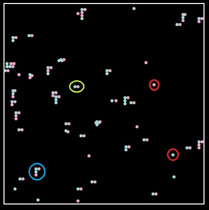
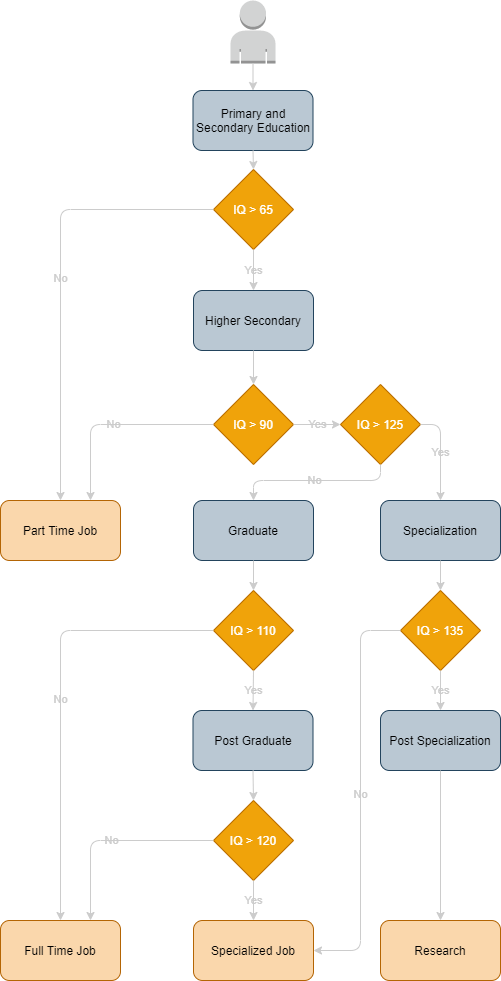
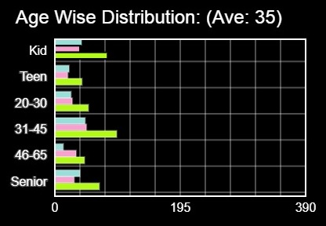
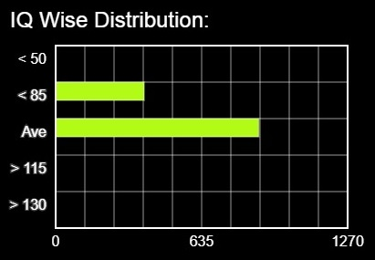
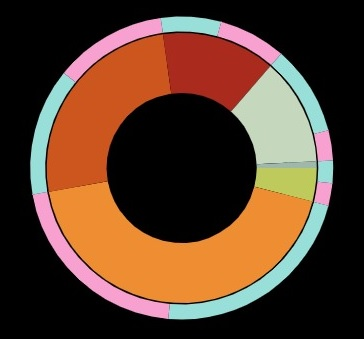
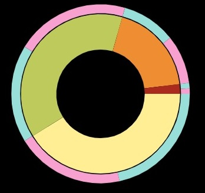

Select State Type
Show Statistics
Long ago I had watched a movie Idiocracy. The reason I remembered the movie is because of its premise.
Over the course of years, generations become dumber and dumber. The base idea being the most intelligent humans to choose not to have children while the less intelligent reproduce indiscriminately. Hmmm... wonder if I can simulate that.
The Rules (based on my assumptions)
What's a State?
A state is like a region where the population resides. For this simulation, interstate travel is not possible. So a person born in 1 state lives in that same state for the rest of his/her life along with his/her generations.

The pink and the blue dot pointed out by the red circle represents a single female and a single male in this state. The dots pointed out by the green circle shows a couple. The dots in blue circle shows a family with 2 kids, a boy and a girl.
On the selection of states, the first choice, State of All, has a population cap of 5000 with their IQ range from 55 to 145. This aptly simulates the movie. The average IQ keeps dipping over time.
The second choice is where I separated them out in three groups, the State Names say it all. For each state the population is capped at 2500. While the IQ range of them are [45-75], [80-110] and [120-150] respectively.
The IQ to Education to Job relationship.

In Electronic Life I had used Chart.js to render the data visualization. Here I wrote custom code to render them.
How to read the statistics:




Idea from Idiocracy movie.